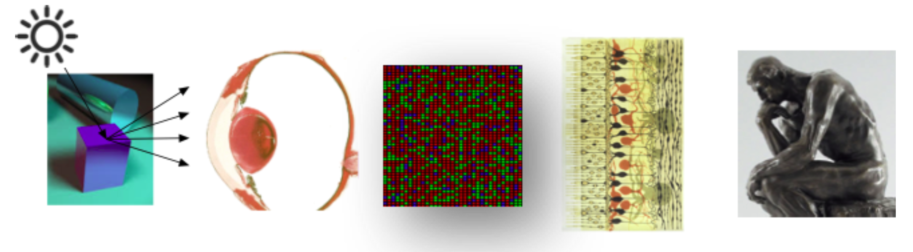
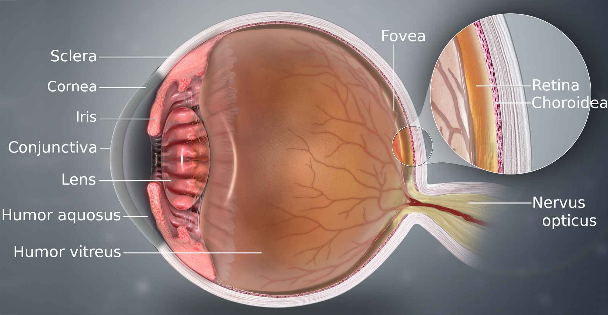
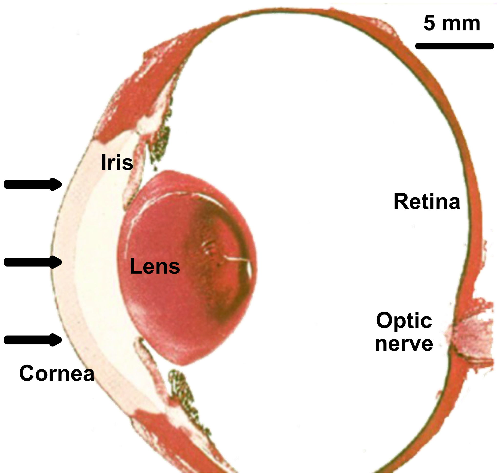
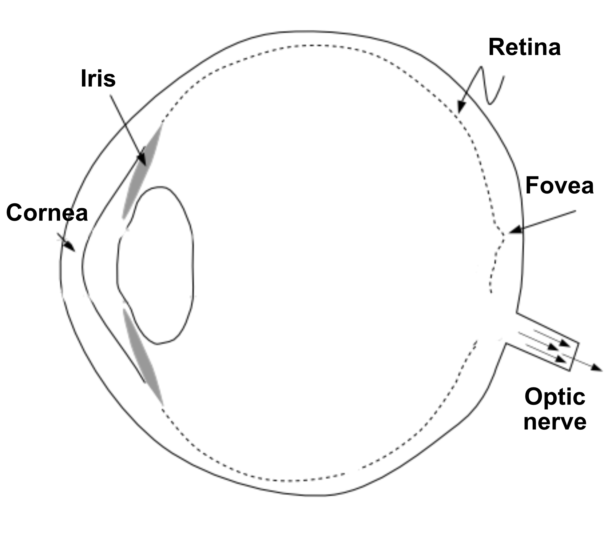
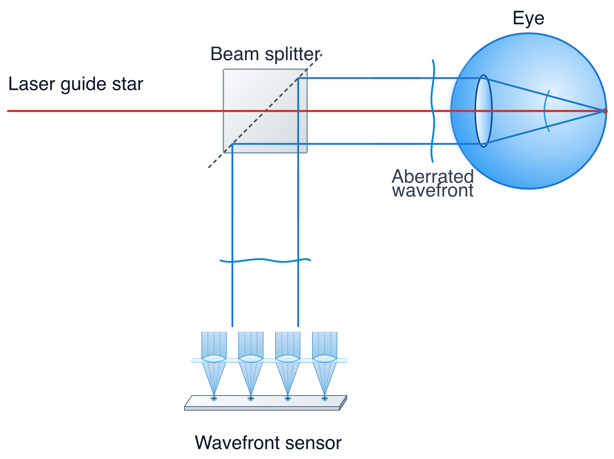
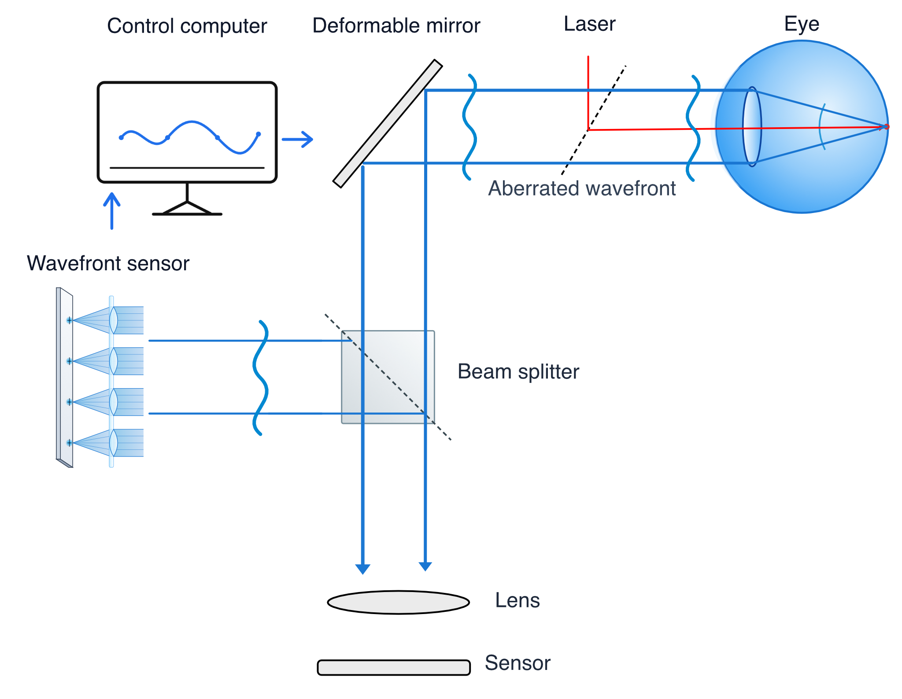
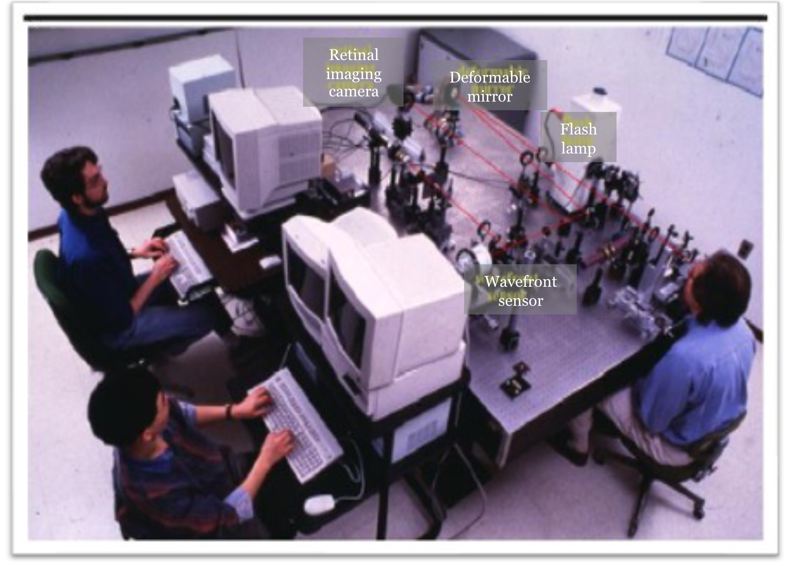

24 Physiological optics
Suggestions of all kinds for this book draft are welcome — whether it’s fixing small errors, raising bigger questions, or offering new perspectives. Please share comments through GitHub Issues. To make feedback easier to address, please point to the section you have in mind — by section number or a short snippet of text.
The material about human vision in this chapter is under development.
Please refer to the chapters in Foundations of Vision.
24.1 Overview
Many of the imaging system components characterized in previous chapters can be treated as input-output systems. For example, we characterized lenses by measuring how an incident light field is transformed into an optical image. Transfer functions estimated from these measurements allow us to build simulations of whole imaging systems.
For parts of the human visual system, we can apply the same systems engineering approach. The eye’s cornea and crystalline lens form an optical system whose transformation of incident light can be measured directly. Similarly, the photoreceptor mosaic provides the input to retinal neural circuitry, while the action potentials along retinal ganglion cell axons form the output.

In this book, we focus on the early stages of the visual pathway that can be characterized with measurable transfer functions. This chapter reviews the first of these steps: how optical blur introduced by the eye’s physiological optics establishes a fundamental bottleneck on spatial resolution. The next chapter, Chapter 25, reviews the second bottleneck, spatial sampling by the photoreceptor mosaic. Spatial information lost at these initial stages cannot be recovered by downstream neural processing. Consequently, these early limits provide a principled foundation for creating quantitative image quality metrics (see Chapter 27).
Later stages of visual processing are fascinating and present different challenges. The perceptual experiences and judgments — color, shape, texture — cannot be read out using a measurement instrument. The cortical circuitry has a wide variety of input and output connections that cannot be characterized using the transformation models we apply to the front end or to engineering components. The visual cortex performs perceptual inferences based on the retinal encoding (Chapter 23), but understanding these inferences will require new science. How vision scientists investigate the cortical circuits and how we might model the relationship between these circuits and perception is explored more fully in Foundations of Vision.
This chapter is deliberately targeted: we quantify how the eye’s physiological optics limit the ability to detect and discriminate signals. Chapter 25 covers the complementary limit set by the photoreceptor mosaic, and the chapter after that covers wavelength encoding. These analyses are the foundation of the most important engineering tools used to model human visual performance.
24.2 The eye’s optical system
Two systems in the eye function together to convert the scene electromagnetic radiation into a neural signal that the brain interprets: the physiological optics and the retina.

The physiological optics—the cornea and lens—gather the incident light field at the eye, focusing it to an image within the retina. The optics are an adaptive system. When the illumination level is high or low the aperture shrinks or expands; when the object of interest is close or far the lens power adjusts its power to bring the object into focus onto the photoreceptors. In addition to neural signals from the brain to the eye that control pupil size and lens power, the system also controls eye, head, and body positions. These signals combine to determine which part of the visual world falls on the retina. These neural signals do not reach the retina itself, but they control which parts of the scene arrive at the retina and how the image is focused.
The second system, the retina, converts the resulting optical image into neural signals; we describe it in Chapter 25.
24.3 Pupil, aperture, and accommodation
The cornea and the flexible lens work together to focus light, forming an image on the retina, as shown in Figure 24.3. This optical system is dynamic, constantly adjusting both the amount of light it lets in and its focal length.
The amount of light entering the eye is controlled by the pupil, an aperture that can dilate (open) to about 8 mm in diameter in dim light or constrict (close) to about 2 mm in bright light. This change in area adjusts the light intake by a factor of about 16 (or 1.2 log units). While significant, this is a small adjustment compared to the vast range of light levels we encounter in nature, which can span as much as 10 log units across a single day. The pupil’s size changes automatically in response to light, but it is also influenced by cognitive and emotional states, which are labeled by terms such as arousal or mental effort.
Notice that the pupil size determines which part of the cornea and lens contributes to image formation. When the pupil is constricted, the image is formed using a relatively small central part of the cornea and lens. Under these conditions, optical aberrations are minimized; the image quality can be very high, sometimes approaching the diffraction limit. When the pupil is wide open much larger regions of the cornea and lens are used to focus. Biological optics are never perfect; under these conditions the aberrations become more significant. More photons reach the retina, improving sensitivity. But the image quality is much worse than diffraction-limited.


The eye changes the object plane that is in focus through a process called accommodation. Neural signals control the ciliary muscles, which are connected to the lens by the zonule fibers. To focus on nearby objects, the ciliary muscles contract. This contraction reduces the diameter of the ring they form, relaxing the tension on the zonule fibers. This allows the elastic lens to become more rounded (convex), increasing its optical power. To focus on distant objects, the ciliary muscles relax. This increases the diameter of the ring, which pulls on the zonule fibers and flattens the lens, decreasing its optical power.
This lens flexibility is not permanent. With age, the lens gradually stiffens, reducing its ability to change shape. This condition, known as presbyopia, makes it difficult for older people to focus on near objects. The loss of near-field visual acuity typically becomes noticeable in one’s early to mid-40s and is a natural part of aging, commonly corrected with reading glasses. It happens to all of us.
24.4 Adaptive optics
By the 1990s, astronomers were routinely using adaptive optics—a Shack-Hartmann wavefront sensor (Section 15.2) paired with a deformable mirror to correct the blur that atmospheric turbulence imposes on telescope images (Section 15.3).
David Williams, at the University of Rochester, recognized that the eye’s optics distort the retinal image in much the same way the atmosphere distorts starlight, and that a sensor and mirror built to correct one could be turned inward to correct the other.
The principle of the wavefront measurement is illustrated in Figure 24.4. A narrow beam of light is directed through the center of the pupil. Some of the light is reflected from the retina, at the layer between the inner and outer segments of the receptors. The reflected light is Lambertian (spread in all directions) and fills up the lens as it passes back through the optics. If the optics were perfect, the rays exiting the eye from the small spot would be close to collimated and the wavefront would be a constant. But the rays are not parallel and thus the wavefront has some deviations from constant. These are the aberrations that we measure with the Shack-Hartmann wavefront sensor; they are introduced by the optics of the eye.

Just as in the case of astronomy, knowledge of the wavefront distortion lets us pre-distort an image before it passes through the optics, so that the aberrations cancel and the retinal image is diffraction limited. The resulting image, from a small region of the retina, is sharp enough to visualize single cones.

The same correction can be applied to a create a spot that is scanned across the retina. When the pupil aperture is fairly large, say 7 mm diameter, the diffraction-limited PSF (Airy disk) diameter is about 3 microns. Scanning a corrected spot across the retina therefore creates a point-by-point image at the back of the eye, at about the same spatial resolution as an individual cone. This technique, adaptive optics scanning laser ophthalmoscopy (AOSLO). Austin Roorda - who lead a group for many years at UC Berkeley and is now at the University of Waterloo - developed and spread this technology over the last twenty years (Roorda et al. 2002; Roorda 2011; Roorda and Duncan 2015).
Importantly, by modulating the scanning laser beam (e.g., using acousto-optic modulators) in synchrony with the raster scan, the system can selectively turn the laser on/off at exact pixel coordinates. Because the adaptive optics system maintains a diffraction-limited spot on the retina, AOSLO can project highly localized visual stimuli directly onto specific, targeted individual photoreceptors (photoreceptor-targeted psychophysics) while simultaneously tracking and imaging them. Using this technique it is possible to ask questions about the perception of stimuli initiated in a single cone, something that almost never happens in normal vision (Tuten et al. 2017).
There have been great advances in this technology in recent years from Don Miller, who has learned how to to make measurements of the retinal ganglion cells in the living human eye (Liu et al. 2017; Marte et al. 2024).
Working with Junzhong Liang and Donald Miller, he built the first adaptive optics system for the living human eye and demonstrated “supernormal vision”—retinal images sharper than the eye’s own optics would otherwise allow Williams et al. (2023).
